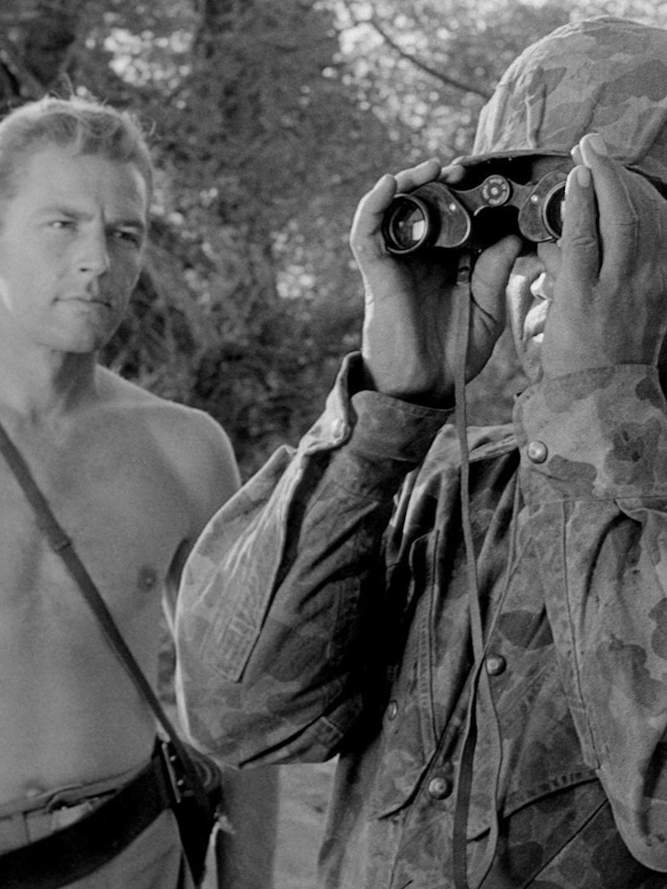

Miedo y deseo
Fear and Desire es el primer largometraje de Stanley Kubrick, estrenado en 1953. Su director la consideró como un «trabajo de aficionado» y mandó retirar todas las copias existentes.
Durante una guerra ficticia, en un país no identificado, cuatro soldados se encuentran tras las líneas enemigas después de estrellarse el avión en el que viajaban y deciden construir una balsa y navegar por un río cercano las 6 millas que les separa de su territorio. Por el camino encuentran a una joven que despertará en ellos sus más bajos deseos. La presencia cercana de un general enemigo no hará más que empeorar las cosas. Alguien del grupo está decidido a matarlo a toda costa.
Estimulado por la experiencia adquirida con sus cortometrajes, Kubrick decidió rodar su primer largometraje.Kubrick dejó su trabajo de tiempo completo en la revista Look y se dispuso a crear Fear and Desire. La película fue realizada casi por completo por Kubrick, que realizó los trabajos de rodaje, guion, edición y producción, entre otros. Igualmente la película fue el debut de Paul Mazursky en los guiones. Asimismo el resto del reparto también eran en su mayoría principiantes.El limitado presupuesto fue puesto en su mayoría por el tío de Kubrick, un adinerado farmacéutico.
A pesar de los pocos medios con los que se contó en el rodaje y de la notable inexperiencia de la mayoría de los participantes, la película consiguió buenas críticas en los círculos cinematográficos de la ciudad de Nueva York. Sin ser considerada una obra maestra, muchos críticos vieron en la película el futuro potencial del autor.
La película sería repudiada por Kubrick, que la consideró la obra de un aficionado. No se sentía nada orgulloso de ella, razón por la que intentó comprar todas las copias existentes de la misma para destruirlas. Actualmente hay dos copias en el museo de fotografía George Eastman House en Nueva York y un negativo original encontrado en un antiguo laboratorio cinematográfico de Puerto Rico. La película se volvió a editar, estando disponible en DVD y Blu Ray.
1968